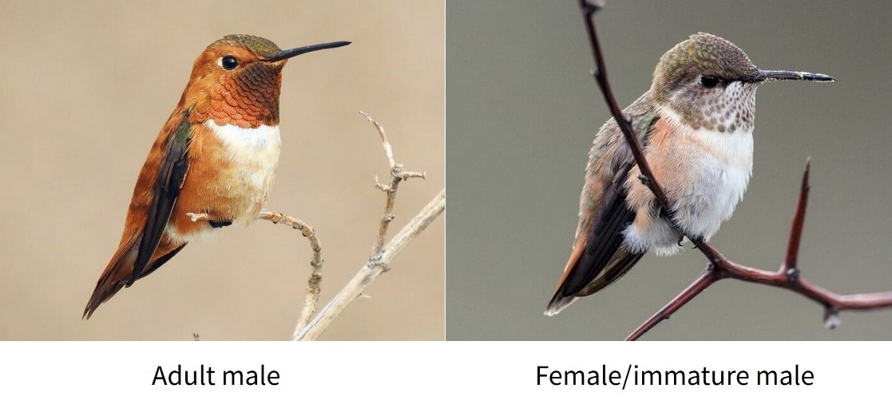

Project Details
Galiwatch is a citizen science project to monitor pollinator populations on Galiano Island, Canada.
We’re developing low-cost data collection and analysis systems for long-term pollinator and bird surveillance and hyperlocal weather and climate monitoring.
Our research blog has detailed updates and new results!
See the Pacific Maritime Big Book of Bees for the reference material we’ve curated.
Overview
Our cameras should capture approximately 0.5 million images (2 terrabytes of data!) over the six-month study period. We hope there will be hundreds or even thousands of images of visiting pollinators. As it would take an overwhelming amount of time to manually look for images containing insects, we are recruiting computers to do it for us, which requires training and running a convolutional neural network. We are currently testing a YOLO (“You Only Look Once”) network for this task.
With systems up and running we hope to collect data from late March to early September including:
- Images of Salal and Dull Oregon grape from bud burst to fruit maturation.
- Images of pollinators showing when and how often they come to visit, and enabling identification of different species.
- Day-to-day weather data, including high and low temperatures, pressure, humidity (Raspberry pi and Acurite), wind speed and direction, total rainfall, UV and light intensity (Acurite only). This will enable comparison of the two systems, and establish reproducibility of the instruments.
- Climate data including average, maximum and minimum temperatures; light intensity; pressure; wind speed, and total rainfall accumulation.
- Estimates of reducing and oxidising gases, and ammonia representing trends of increasing or decreasing air quality, and estimates of particulates, such as dust, pollen, mould spores, smoke etc.
In addition to piloting the technology, the images and weather data will provide baseline information about our test site including:
- Date of bud burst and duration of flowering of salal and dull Oregon grape.
- Pollinator community composition visiting these plants during the flowering season (bees, hoverflies, butterflies, moths, wasps, other flies, beetles, hummingbirds).
- Time of first appearance and seasonal dynamics of different pollinators.
- How much of a role, if any, non-bee visitors play in the pollination of these two native plants.
- How hyperlocal weather and variations in air quality influence pollinator activity.
The images and weather data will add to what is already known about pollinators in coastal Douglas-fir ecosystems on the west coast of British Columbia and provide additional information about pollinator behaviour both throughout the day and day-to-day while plants are in bloom.
Study Site
Galiano is a long narrow island of the Southern Gulf Island chain situated on the western edge of the Salish Sea. Located within the coastal Douglas-fir biogeoclimatic zone, it has a semi-arid ecosystem characterized by a mild climate with cool wet winters and warm dry summers, and with annual drought conditions typically from mid-June to early October. Image adapted from Galiano Story.
Native tree species include coast Douglas-fir, western red cedar, arbutus, western hemlock, grand fir, Garry oak, red alder, and big leaf maple. Native plants commonly found in the understory include salal, Oregon grape, sword fern, vanilla leaf, and a variety of grasses, wildflowers, mosses, and lichens. This rural island remains relatively intact ecologically.
The study site is situated mid island surrounded by the Mid Galiano Protected Areas Network, and within the Greig creek watershed. Cameras will be positioned to survey insect visitations to patches of salal and dull Oregon grape in proximity to a seasonally occupied log cabin. Weather data (temperature, barometric pressure, and humidity), as well as air quality and particulate matter data will be collected at the location using Purple Air and other sensors, as well as by an independent weather station positioned close by. There are a wide variety of native and introduced flowering plants in the immediate vicinity.
| Native | Introduced |
|---|---|
| Salal | Daffodil |
| Oregon grape | Helebore |
| Rock stonecrop | Heather |
| Wild strawberry | Wooly mint |
| Clover | Sage |
| Vetch | Oregano |
| Trailing blackberry | Lavender |
| Western star flower | Marjoram |
| Red-flowering currant | Cranesbill |
| Honeysuckle | Rose campion |
| Miners Lettuce | Cutleaf blackberry |
| Creeping Thistle | Periwinkle |
| Common Catsear | Dandelion |
| Thimbleberry | Daisy and oxeye daisy |
| - | Scotch broom |
| - | Himalayan blackberry |
Proximate habitat within about a 1/2 km radius includes bare bedrock, light well-draining sandy soil interspersed with clay deposits, and soil with high organic content from fallen trees and branches. Urbanisation includes several other nearby properties, some seasonal, others occupied year-round, which are serviced by paved roads, as well as about an acre of productive farmland (flowering crops include sunflowers, peas, beans, potatoes, basil, and artichokes, etc). There are two man-made ponds as well as areas of wetland and rough pasture.
Weather monitoring
Researchers have discovered that honey bees are able to detect changes in weather and alter their behaviour accordingly. Honey bees for example can be seen to respond minute-to-minute to the local weather conditions outside their hive, with the temperature and amount of sunlight being the most important factors signalling them to fly.1 In other studies, honey bees were seen to increase their foraging activity the day before a rainy day, but continued on a steady course when the weather was set fair.2
Like honey bees, bumble bees feed on nectar and pollen and bring these resources back to the nest to feed their young. Perhaps not surprisingly, local weather conditions are found to influence their foraging activity too, but in this case it seems to be humidity that is most important - the more humid it gets the more foraging there is, and bumble bees will forage whatever the temperature, wind speed, or cloud cover.3 The researchers found that weather also influenced whether bumble bees collected nectar or pollen, with more pollen being collected when it was warm, windy, and low humidity, than on damper days; perhaps because in these conditions the pollen is easier for the bees to handle.
Interestingly, different bee species have adapted different levels of resilience to weather conditions and will forage at different temperatures and light intensities, with some species continuing to forage even in strong winds or light rain.4
We will be investigating the connection between hyperlocal weather conditions and pollinator activity at our test site. The weather sensors and weather station are equipped to measure temperature, humidity, wind speed and direction, total rainfall, pressure, UV, and light intensity. Readings are dumped every 30s to an SD card.
Pollinator detection
It’s well known that bees are important wildflower pollinators; however, many non-bee pollinators including wasps, hover flies, other flies, beetles, butterflies, moths, and hummingbirds also visit flowering plants and are often overlooked in pollinator monitoring studies. Although these non-bee visitors deposit a lot less pollen per visit, they can make up for it by visiting much more frequently.5 Local surveys of bee species that pollinate salal and dull Oregon grape found bumble bees to be the primary pollinators, with other bee species visiting less frequently (Wray & Elle, SFU Pollination Ecology Lab).
We have mounted multiple surveillance cameras comprising of a Raspberry Pi (powered over ethernet) fitted with a Pi camera and a 1 terabyte solid state drive, inside a waterproof box. The cameras have been situated so that they point down towards the patches of salal and dull Oregon grape. By positioning the cameras about a meter from the tops of the plants, we can film an area of about half a square meter with high resolution. The cameras are set to take a picture every 15 seconds to minute and the images are stored on the SSD.
Hummingbirds
There are two species of hummingbirds found near Galiano: the green Anna’s Hummingbird and the orange Rufous Hummingbird. ID images from allaboutbirds.org.


We put a camera up and have taken a picture every minute since 2021 during the daylight hours. (In 2021, this was only in the summer, but since 2022, we have changed to year-round monitoring). One thing we are looking is for the arrival and departure of the migrating Rufous hummingbird. The first and last picture of a male and female Rufous each year is posted to iNaturalist
Birdsong
We have several “Audio moth” microphones, controlled by a Raspberry pi, which can be powered by and connected to a our computers via ethernet. This little device is now set to collect bird song at our site 24/7.
The sound files are processed locally on the pi when a sound is detected using a BirdNET-Pi system which automatically extracts songs and chirps from the recordings, creates spectrograms of each recorded bird sound, stores the result in a database and enables data analysis and visualization. It works tirelessly 24 hours per day and seems to work very well, except in torrential downpours, when all it can “hear” is the sound of raindrops.
We brought three of these to the Galiano Bioblitz 2023, and now have over 100,000 recordings from three different areas. Analysis of this is ongoing.
Future endeavors may expand to frogs, bats, and… fish!?
References
Footnotes
Clarke D, Robert D. Predictive modelling of honey bee foraging activity using local weather conditions. Apidologie. 2018;49(3):386-96. https://doi.org/10.1007/s13592-018-0565-3↩︎
He XJ, Tian LQ, Wu XB, Zeng ZJ. RFID monitoring indicates honeybees work harder before a rainy day. Insect science. 2016;23(1):157-9. https://doi.org/10.1111/1744-7917.12298↩︎
Peat J, Goulson D. Effects of experience and weather on foraging rate and pollen versus nectar collection in the bumblebee, Bombus terrestris. Behavioral Ecology and Sociobiology. 2005;58(2):152-6. https://doi.org/10.1007/s00265-005-0916-8↩︎
Vicens N, Bosch J. Weather-dependent pollinator activity in an apple orchard, with special reference to Osmia cornuta and Apis mellifera (Hymenoptera: Megachilidae and Apidae). Environmental Entomology. 2000;29(3):413-20. https://doi.org/10.1603/0046-225X-29.3.413↩︎
Rader R, Bartomeus I, Garibaldi LA, et al. Non-bee insects are important contributors to global crop pollination. Proceedings of the National Academy of Sciences. 2016;113(1):146-51. https://doi.org/10.1073/pnas.1517092112↩︎